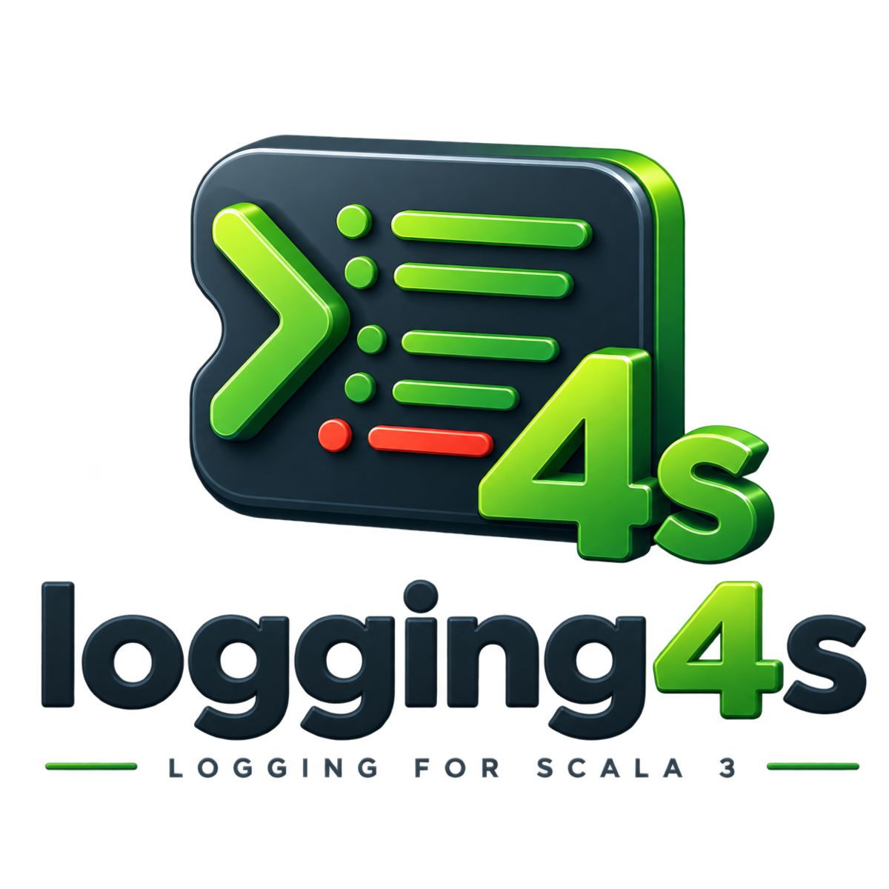

logging4s
Structured logging for Scala 3 — for any backend, any effect, and any JSON library.


You describe how your types render with a Loggable[A] type class, get a Logging[F[_]] for
your effect type, and log values directly. Each value is rendered to JSON and attached to the log event as
structured data; the message string carries a human-readable rendering of the same values.
The library is a backend-agnostic core plus thin integration modules. The logging backend
(logback / log4j2 / slf4j / console), the effect type (cats-effect / ZIO / Kyo / rapid), and the JSON codec
(circe / jsoniter / …) are independent modules, each wired in through a given import. core
has no dependency on any of them.
Quick start
Pick a backend and an effect runtime (a JSON library is optional — derives Loggable needs none):
libraryDependencies ++= Seq(
"org.logging4s" %% "logging4s-cats" % "2.0.0",
"org.logging4s" %% "logging4s-logback" % "2.0.0"
)import cats.effect.{IO, IOApp}
import logging4s.core.{Loggable, Logging}
import logging4s.cats.CatsInstances.given // Delay[IO], cats.Show / data bridges
import logging4s.logback.LogbackInstances.given // the LoggingFactory
final case class User(id: Int, name: String) derives Loggable
object Main extends IOApp.Simple:
def run: IO[Unit] =
for
log <- Logging.create[IO]("Main")
_ <- log.info("user created", User(1, "John"))
yield ()The logback backend attaches User as a nested JSON object; the message keeps its plain rendering:
{"message":"user created: user -> (id -> (1), name -> (John))","user":{"id":1,"name":"John"},"level":"INFO"}The Loggable type class
Everything centers on one type class. A Loggable[A] is required for any value you log:
trait Loggable[A]:
val key: ValueKey // the field name the value logs under
def json(a: A): JsonString // structured form
def plain(a: A): PlainString // human-readable form, appended to the message
There are four ways to obtain an instance — derived, fromEncoders, make, and
the field-policy builder deriving. Each infers the top-level key from the type name by default, or takes
an explicit key as its first argument, consistently across all four:
Loggable.derived[User] // key "user" Loggable.derived[User]("account")
Loggable.fromEncoders[User] // key "user" Loggable.fromEncoders[User]("account")
Loggable.make[User](…) // key "user" Loggable.make[User]("account")(…)
Loggable.deriving[User] // key "user" Loggable.deriving[User]("account")Derivation
derives Loggable builds both renderings structurally from the fields — the JSON object is assembled by
the macro, no JSON library involved. Products key by field name; sum types delegate to the selected variant.
final case class Point(x: Int, y: Int) derives Loggable
enum Color derives Loggable:
case Red, Green, BlueFrom an existing codec
If you already have a JSON codec for A, Loggable.fromEncoders delegates json
to it — the log JSON is exactly your codec's output (its field names, its escaping), and plain comes
from a PlainEncoder (e.g. bridged from cats.Show) or a structural fallback. Prefer this
when a codec exists.
given io.circe.Encoder[User] = io.circe.generic.semiauto.deriveEncoder
given Loggable[User] = Loggable.fromEncodersBy hand, or by adapting another instance
make takes the two renderings directly — json returns a JsonString
(JsonString.quoted escapes a string, JsonString(…) is raw), plain a
PlainString:
given Loggable[Money] = Loggable.make(m => JsonString(m.cents.toString), m => PlainString(s"$$${m.cents / 100.0}"))
given Loggable[UserId] = Loggable[Int].contramap(_.value, "user_id")
val secret = Loggable[String].redacted() // always renders "***"Per-field policies
For derived products, override individual fields with a builder. Selectors are macro-checked field references — not strings, not annotations — so they survive refactors and work on types you don't own:
given Loggable[Account] =
Loggable.deriving[Account]
.hide(_.password) // omit
.mask(_.email)(MaskMode.KeepLast(4)) // partial mask
.rename(_.id, "account_id") // custom key
.unembed(_.address) // splice its fields into the parent object
.derivedLogging
Logging.create returns F[Logging[F]]; the log methods return F[Unit]. There
are createTry / createEither / createUnsafe variants for non-effect code.
for
log <- Logging.create[IO]("OrderService")
_ <- log.info("order placed", user, order) // any number of values
_ <- log.error("payment failed", throwable, order) // with a cause
scoped = log.withContextValues(requestId.asLogValue("request_id"))
_ <- scoped.info("handled") // context attached to every line
yield ()
An interpolator is available for terser call sites — import logging4s.core.syntax.logging.*, have a
given Logging[F] in scope, and the key is taken from the interpolated identifier:
info"order placed: $order" // == log.info("order placed", order.asLogValue("order"))Backends
Loggable.json produces a JSON string, but how it reaches the output depends on the backend — the one
choice that materially affects the result:
| Backend | How structured values are emitted | Nested JSON? |
|---|---|---|
logback | logstash raw-JSON markers | Yes — genuine nested objects/arrays |
log4j2 | a MapMessage argument (no MDC) | Yes with JsonTemplateLayout in object mode |
slf4j | slf4j 2.x fluent addKeyValue | Provider-dependent; typically strings |
console | writes the JSON itself to stdout/stderr | Yes — no framework needed |
The same call comes out as a nested object under logback / log4j2 / console, and as an escaped string under bare slf4j:
{"message":"user created: …","user":{"id":1,"name":"John"}} // logback / log4j2 / console
{"message":"user created: …","user":"{\"id\":1,\"name\":\"John\"}"} // slf4j — stringly-typed
We never touch your logback.xml / log4j2.xml: values are only attached to the event and
your encoder/layout decides what to render. logging4s-logback also ships an opt-in
Logging4sEncoder that writes the JSON itself (no logstash round-trip, no Jackson):
<encoder class="logging4s.logback.Logging4sEncoder"/>
logging4s-console needs no logging framework at all — structured JSON (or colored plain) straight to
stdout, ideal for containers. It's configured via HOCON under logging4s.console
(override in application.conf or with LOGGING4S_CONSOLE_* env vars):
logging4s.console {
level = "info" # error | warn | info | debug | trace
format = "json" # json | plain
color = "auto" # auto (TTY only) | on | off
stream = "stdout" # stdout | stderr
max-stack-trace-lines = -1
}Configuration
Rendering is controlled by a single LoggableEncodingConfig (logging4s.core.config). A
default given is provided; override it once, application-wide.
| Field | Default | Effect |
|---|---|---|
jsonTupleAsArray | true | tuple/Map/Ior JSON: [1,"a"] vs {"int":1,"string":"a"} |
keyNameStyle | SnakeCase | applied to every key: AsIs / Snake / Kebab / Camel / Pascal |
plainTupleStyle | AsScala | tuple plain form: (1, a) / [1, a] / 1, a / {1, a} |
plainValuesStyle | Arrow | value join: k -> (v) / k=v / k: v / {k=v} |
Default keys: scalars key by type name (Loggable[Int] → int), date/time use
time, FiniteDuration uses time_ms, collections pluralize
(List[Int] → ints), a derived case class keys by its decapitalized name.
Modules
Published for Scala 3 under org.logging4s:
"org.logging4s" %% "logging4s-<module>" % "2.0.0"| Kind | Module | Notes |
|---|---|---|
| core | logging4s-core | type classes + Logging; no backend dependency |
| backend | logging4s-logback | logback + logstash-encoder; real nested JSON |
logging4s-log4j2 | Log4j2 API; values as a MapMessage | |
logging4s-slf4j | bare slf4j-api 2.x; bring your own binding | |
logging4s-console | standalone JSON/plain to stdout; HOCON-configured | |
| runtime | logging4s-cats | cats-effect 3; plain via cats.Show |
logging4s-zio | zio.Task; plain via zio.prelude.Debug | |
logging4s-kyo | kyo.IO; plain via kyo.Render | |
logging4s-rapid | rapid.Task | |
| json | logging4s-circe | io.circe.Encoder |
logging4s-jsoniter | jsoniter-scala JsonValueCodec | |
logging4s-zio-json | zio-json JsonEncoder | |
logging4s-play-json | play-json Writes | |
logging4s-spray-json | spray-json JsonWriter | |
logging4s-json4s | json4s Formats | |
logging4s-argonaut | argonaut EncodeJson | |
logging4s-borer | borer Encoder | |
logging4s-upickle | upickle Writer | |
logging4s-weepickle | weepickle From | |
logging4s-fabric | fabric Json |
Each integration module exposes its givens as a named trait plus companion object, so you can also mix
several into one import: object instances extends LogbackInstances with CatsInstances with CirceInstances.
Benchmarks
A JMH harness logs the same mid-size event through every backend into a discarding sink. Every row is logging4s itself on a different backend/encoder — this compares our own backend choices against each other, not logging4s against other logging libraries. Measured as throughput — operations per second, higher is better (single fork, one machine — rough ballpark, run it on your own hardware):
| Config | ops/s |
|---|---|
log4j2 + JsonTemplateLayout (nested) | ~330k |
log4j2 (stringified) | ~210k |
console + fromEncoders (jsoniter) | ~200k |
logback + Logging4sEncoder | ~170k |
logback + LogstashEncoder | ~140k |
console + derives | ~120k |
Rough numbers — single fork on a loaded laptop, wide error bars, read them as orders of magnitude. The encoding path
matters as much as the backend: on the same console, fromEncoders with a codec is ~1.7× the
throughput of derives. The opt-in Logging4sEncoder edges past the standard
LogstashEncoder — it builds the JSON in one pass with no Jackson round-trip.
Migration from 1.x
2.0.0 is a breaking release, but most call sites need only small edits — Logging.create, the
*Instances.given imports, LoggingContext, and the per-level methods are all
source-compatible.
1. Bump the version. Coordinates are otherwise identical:
- "org.logging4s" %% "logging4s-cats" % "1.0.1"
+ "org.logging4s" %% "logging4s-cats" % "2.0.0"
2. syntax is now a package — add .all. The extension methods
(asLogValue, withKey, Seq.plain) sit behind an aggregator object:
- import logging4s.core.syntax.*
+ import logging4s.core.syntax.all.*
3. The single make split into four purpose-specific constructors. In 1.x every
instance was built with Loggable.make. 2.0 replaces it with four constructors — pick by where the two
renderings come from:
| 1.x | 2.0 | Use when |
|---|---|---|
make[A: JsonEncoder: PlainEncoder]("k") | Loggable.fromEncoders[A] | You have a JSON codec — json is the codec's own output. |
| n/a | derives Loggable / Loggable.derived[A] | No codec — JSON assembled structurally by the macro. |
| n/a | Loggable.deriving[A]….derived | Derived, plus per-field policies (hide / mask / rename / unembed). |
make[A]("k")(encode, show) | Loggable.make[A](json, plain) | Fully manual — you write both renderings by hand. |
// 1.x — codec-backed make
given Loggable[User] = Loggable.make("user")
// 2.0 — that is exactly fromEncoders (key "user" from the type name; or fromEncoders("user"))
given Loggable[User] = Loggable.fromEncoders
// 1.x — manual make, functions returned String
given Loggable[Money] = Loggable.make("money")(m => m.cents.toString, m => s"$$${m.cents / 100.0}")
// 2.0 — same shape, functions now return the opaque JsonString / PlainString
given Loggable[Money] = Loggable.make(m => JsonString(m.cents.toString), m => PlainString(s"$$${m.cents / 100.0}"))Every constructor takes the key as an optional first argument, or infers it from the type name.
4. Hand-written instances return opaque types. If you implement Loggable (or
JsonEncoder / PlainEncoder) by hand, key / json / plain
return ValueKey / JsonString / PlainString instead of raw String —
wrap the values. Also rename / contramap / redacted are now final.